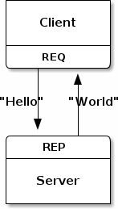
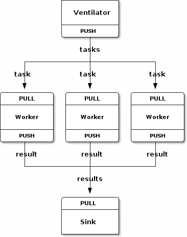

四种基本常用消息通信模型：分别是一对一结对模型（Exclusive-Pair）、请求回应模型（Request-Reply）、发布订阅模型（Publish-Subscribe）、推拉模型（Push-Pull）。这4种模型总结出了通用的网络通信模型，在实际中可以根据应用需要，组合其中的2种或多种模型来形成自己的解决方案。
1、一对一结对模型
最简单的1:1消息通信模型，可以认为是一个TCP Connection，是支持传统的TCP模型，但是TCP Server只能接受一个连接。数据可以双向流动，这点不同于后面的请求回应模型。
2、请求回应模型
由请求端发起请求，并等待回应端回应请求。从请求端来看，一个请求必须对应一个回应，从请求端的角度来看是发-收配对，从回应端的角度是收-发对。请求端和回应端都可以是 1:N 的模型。通常把 1 认为是 server ，N 认为是 Client 。ZeroMQ 可以很好的支持路由功能（实现路由功能的组件叫作 Device），把 1:N 扩展为 N:M （只需要加入若干路由节点）。从这个模型看，更底层的端点地址是对上层隐藏的。每个请求都隐含有回应地址，而应用则不关心它。该模型主要用于远程调用及任务分配等。Echo服务就是这种经典模型的应用。
3、发布订阅模型

这个模型里，发布端是单向只发送数据的，且不关心是否把全部的信息都发送给订阅端。如果发布端开始发布信息的时候，订阅端尚未连接上来，这些信息直接丢弃。不过一旦订阅端连接上来，中间会保证没有信息丢失。同样，订阅端则只负责接收，而不能反馈。如果发布端和订阅端需要交互（比如要确认订阅者是否已经连接上），则使用额外的 socket 采用请求回应模型满足这个需求。该模型主要用于数据分发。天气预报、微博明星粉丝可以应用这种经典模型。
4、推拉模式（管道模式）
这个模型里，管道是单向的，从 PUSH 端单向的向 PULL 端单向的推送数据流。Server端作为Push端，而Client端作为Pull端，如果有多个Client端同时连接到Server端，则Server端会在内部做一个负载均衡，采用平均分配的算法，将所有消息均衡发布到Client端上。与发布订阅模型相比，推拉模型在没有消费者的情况下，发布的消息不会被消耗掉；在消费者能力不够的情况下，能够提供多消费者并行消费解决方案。该模型主要用于多任务并行。
5、模型特点和协议支持
任何分布式，并行的需求，都可以用后三种模型组合起来解决问题。它只专注和解决了消息通讯这一基本问题。基于定义好的模型，我们可以看到，api 可以实现的非常简单易用而且数量不多。我们不再需要像传统那样 bind/listen/accept 来架设服务器，因为这个模型天然是 1:N 而不是 1:1 的，不需要为每个通道保留一个句柄。我们也不必在意 server 是否先启动（bind），而后才能让 client 工作起来（connect）。
以上模型中，关注的是通讯双方的职责，而不是实现的方式：监听端口还是连接对方端口。对于复杂的多进程协同工作的系统, 不必纠结于进程启动的次序。提供进程内、进程间、机器间、广播等四种通信协议。通信协议配置简单，用类似于URL形式的字符串指定即可，格式分别为inproc://、ipc://、tcp://、pgm://。ZMQ会自动根据指定的字符串解析出协议、地址、端口号等信息。